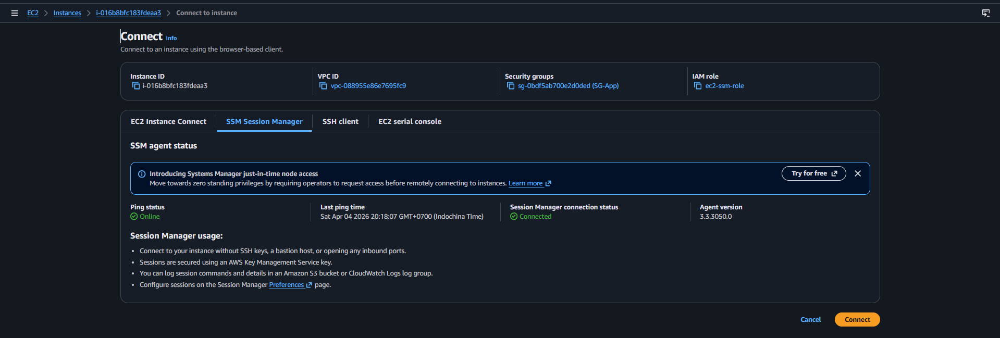
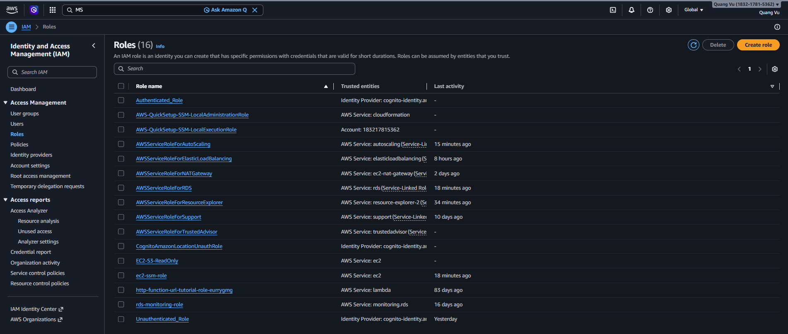
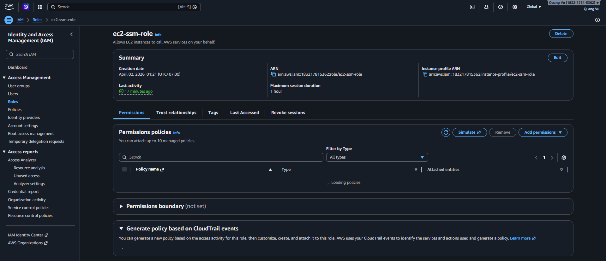

Truy cập vận hành và quản trị bí mật
Thực hành truy cập vận hành và quản trị bí mật
Tổng quan
- Phần này giải thích cách operator và application instance truy cập môi trường mà không cần public server.
- Nội dung tập trung vào AWS Systems Manager, IAM instance profile, AWS Secrets Manager và AWS KMS.
- Đây là phần nên xem trước khi xử lý tình huống admin không vào được private EC2 hoặc ứng dụng không đọc được secret.
- Ở góc nhìn vận hành thực tế, đây là phần mô tả cách con người và máy được cấp trust mà không phải quay về hardcoded credential hoặc public SSH.
Các dịch vụ AWS trong phần này
AWS Systems Manager (SSM)

- Cung cấp truy cập có kiểm soát cho operator vào EC2 trong private subnet.
- Không cần mở SSH hay public IP.
- Có thể hỗ trợ session tương tác, chạy lệnh và các workflow vận hành chuẩn hóa.
IAM Instance Profile

- Cấp danh tính cho EC2 instance.
- Cho phép ứng dụng truy cập AWS service mà không cần hardcode credential.
- Cung cấp temporary credential được AWS tự xoay vòng.
AWS Secrets Manager
- Lưu trữ các thông tin nhạy cảm như connection string, API key.
- Cho phép ứng dụng lấy secret một cách an toàn trong runtime.
- Tách vòng đời của secret khỏi vòng đời deploy ứng dụng.
AWS KMS
- Mã hóa và bảo vệ secret.
- Kiểm soát quyền truy cập key thông qua IAM.
- Biến bài toán mã hóa thành trách nhiệm của managed service thay vì để ứng dụng tự giải quyết.
Amazon EC2

- Sử dụng IAM role và lấy secret trong runtime.
- Là nơi thực thi application một cách an toàn.
- Dùng machine identity để truy cập Secrets Manager, CloudWatch, SES và các AWS API khác.
Vì sao thiết kế này dùng SSM và IAM
- Sơ đồ thể hiện admin access đi qua Systems Manager thay vì SSH public qua internet.
- Các EC2 instance dùng IAM role gắn kèm, nên ứng dụng không cần giữ AWS key dài hạn trong file.
- Đường truy cập được thể hiện là truy cập vận hành và machine identity, không phải xác thực người dùng cuối.
- Thiết kế này giúp quyền truy cập có thể audit, thu hồi và đồng bộ với trust model của AWS.
Luồng AWS từng bước
- Operator cần shell access hoặc run-command access vào một EC2 instance private.
Dịch vụ: AWS Systems Manager.
Điều xảy ra: Operator khởi tạo một phiên SSM tới instance mục tiêu qua control plane của AWS.
Tại sao quan trọng: Không cần bastion host hay mở public SSH.
- Instance xác thực bằng danh tính máy.
Dịch vụ: IAM instance profile.
Điều xảy ra: EC2 nhận temporary credential từ IAM role được gắn.
Tại sao quan trọng: Ứng dụng có thể gọi AWS API mà không cần static access key.
- Ứng dụng yêu cầu một secret.
Dịch vụ: AWS Secrets Manager.
Điều xảy ra: App gọi lấy secret theo tên trong runtime.
Tại sao quan trọng: Credential database và token tích hợp có thể được xoay vòng ngoài gói triển khai.
- Secret được giải mã theo mô hình bảo vệ của KMS.
Dịch vụ: AWS KMS.
Điều xảy ra: Secrets Manager dùng cơ chế mã hóa dựa trên KMS cho giá trị secret lưu trữ.
Tại sao quan trọng: Secret được mã hóa và việc dùng khóa có thể được kiểm soát.
- IAM role đó cũng có thể cho phép ghi log và gửi email.
Dịch vụ: IAM, CloudWatch, SES.
Điều xảy ra: Role của instance cho phép các thao tác AWS khác mà workload cần.
Tại sao quan trọng: Một danh tính máy duy nhất có thể phục vụ nhiều tích hợp nhưng vẫn giữ được kiểm soát quyền.
Hành vi request và response
- Operator request đi vào SSM và sẽ tạo session thành công hoặc thất bại tùy theo trạng thái đăng ký và IAM.
- Application request đi tới Secrets Manager và sẽ nhận secret hoặc lỗi do quyền, region hoặc naming.
- Yêu cầu giải mã đi qua KMS một cách ngầm định trong secret flow và chỉ thành công khi IAM policy cùng key policy khớp nhau.
- Runtime hoặc nhận được cấu hình để tiếp tục chạy an toàn, hoặc lộ ra sớm lỗi policy hay cấu hình.
AWS CLI Walkthrough
1. Mở phiên SSM vào private instance
aws ssm start-session \
--target ${INSTANCE_ID} \
--region ${AWS_REGION}
2. Xác minh IAM instance profile đang được gắn
aws ec2 describe-instances \
--instance-ids ${INSTANCE_ID} \
--region ${AWS_REGION} \
--query 'Reservations[0].Instances[0].IamInstanceProfile.Arn' \
--output text
3. Đọc giá trị secret
aws secretsmanager get-secret-value \
--secret-id ${DB_SECRET_ID} \
--region ${AWS_REGION}
4. Liệt kê alias KMS
aws kms list-aliases --region ${AWS_REGION}
Cách đọc các lệnh này:
- Một phiên SSM thành công là bằng chứng cho thấy cả management plane lẫn việc đăng ký instance đều đúng.
- Nếu thiếu ARN của instance profile thì đó thường là nguyên nhân cho lỗi đọc secret, ghi log hoặc gọi SES.
- Lỗi đọc secret thường đến từ IAM, sai secret ID hoặc thiếu quyền KMS.
- Việc liệt kê alias KMS giúp kiểm tra ranh giới mã hóa có thực sự tồn tại trong môi trường hay không.
Ví dụ cấu hình
Quyền tối thiểu cho instance-role trong kiến trúc này
{
"Version": "2012-10-17",
"Statement": [
{
"Effect": "Allow",
"Action": [
"secretsmanager:GetSecretValue",
"kms:Decrypt",
"logs:CreateLogStream",
"logs:PutLogEvents",
"ses:SendEmail",
"ses:SendRawEmail"
],
"Resource": "*"
}
]
}
Ý nghĩa của policy này:
- Instance đọc được secret.
- Instance giải mã được dữ liệu thông qua KMS.
- Instance ghi log và gửi email được.
- Không cần lưu static AWS key trên máy chủ.
Key Logic / Rules
- Truy cập quản trị đi qua SSM, tránh phải mở public SSH hay dùng bastion trong thiết kế này.
- Secret được tách ra khỏi application server và lưu trong managed service.
- IAM role thực thi nguyên tắc least privilege cho machine identity.
- Encryption được coi là năng lực managed của nền tảng chứ không phải key store do ứng dụng tự sở hữu.
- Instance profile trong sơ đồ được dùng để đọc secret, ghi log và gửi email.
- Trong production, phạm vi resource của IAM nên chặt hơn nhiều so với ví dụ đơn giản trong workshop.
Lưu ý về vận hành và bảo mật
- Tách rõ quyền của operator và quyền của workload để human access và machine access không bị lẫn vào nhau.
- Bật Session Manager logging để truy vết khi cho phép interactive access.
- Dùng naming convention nhất quán cho secret theo môi trường, workload và mục đích sử dụng.
- Rà soát kỹ phạm vi của KMS key policy khi dùng customer-managed key.
- Cân nhắc dùng VPC endpoint cho SSM, Secrets Manager và CloudWatch nếu môi trường cần giảm phụ thuộc vào NAT trong control-plane access.
Best practices
- Thay wildcard bằng ARN cụ thể của secret và key trong production.
- Tài liệu hóa workload nào được giải mã secret nào và vì sao.
- Xoay vòng secret theo chu kỳ phù hợp với risk profile của môi trường.
- Xem lỗi lấy secret là tín hiệu vận hành quan trọng, không chỉ là lỗi của ứng dụng.
Những gì cần xác minh
- EC2 instance mục tiêu đã được đăng ký trong Systems Manager.
- Instance có IAM instance profile đi kèm.
- Ứng dụng đọc được đúng các secret name mà nó cần.
- Quyền KMS chỉ cấp cho principal thực sự cần giải mã.
- Operator dùng SSM thay vì mở inbound SSH từ internet.
Lỗi thường gặp
- Gắn role cho EC2 nhưng quên cấp
secretsmanager:GetSecretValue.
- Có quyền Secrets Manager nhưng thiếu
kms:Decrypt khi dùng customer-managed KMS key.
- Nhầm rằng xác thực người dùng cuối nằm ở đây trong khi sơ đồ chỉ thể hiện đường truy cập cho operator và machine identity.
- Quay lại hard-coded credential vì naming convention của secret chưa rõ ràng.
- Giữ nguyên IAM policy quá rộng từ giai đoạn workshop sang môi trường trưởng thành hơn.
Ghi chú / Giả định
- Sơ đồ không ghi cụ thể chế độ SSM nào, nhưng Session Manager là cách hiểu trực tiếp nhất cho truy cập tương tác.
- Secret rotation và KMS key rotation policy không được thể hiện.
- Không có identity provider riêng hay workflow engine chi tiết cho admin trong sơ đồ, nên tài liệu tập trung vào các AWS control đang nhìn thấy được.
- Trong môi trường siết chặt hơn, có thể dùng VPC endpoint cho SSM, Secrets Manager và CloudWatch để giảm phụ thuộc vào NAT đối với control-plane traffic.